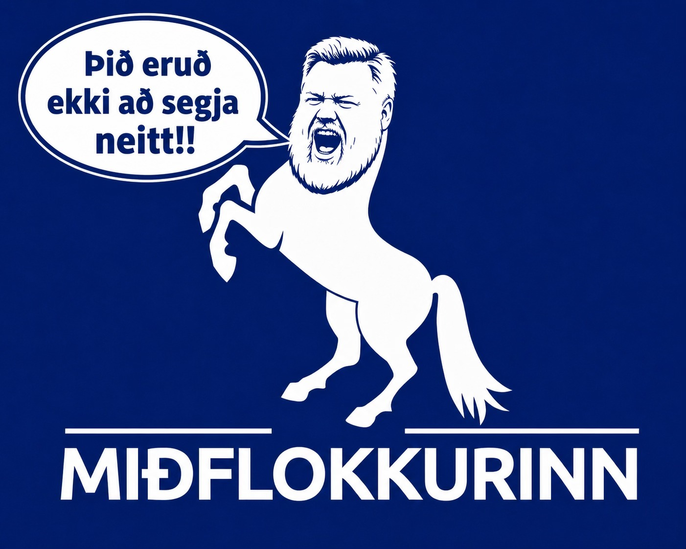

Hið alræmda Silfur Egils um daginn var skemmtilegt á að horfa og ég skrifaði aðeins um það, því Sigmundur Davíð svaraði öllum rökum með ESB: „þið eruð ekki að segja neitt“, greip svo fram í fyrir fólki og hafði ekkert til málanna að leggja. En nú, að skemmtanagildi fráteknu, fór ég aðeins að spekúlera, því það voru þarna nokkur síendurtekin slagorð sem maður hefur margoft heyrt áður.

Andstæðingum þess að þjóðin fái að vita hvað felst í aðild að ESB virðist af einhverjum ástæðum tamt að æpa „froða“ þegar teflt er fram rökum sem eru fylgjandi aðild.
Ein röksemdin sem teflt hefur verið fram, studd af nýlegum yfirlýsingum Costas Kadis, sjávarútvegsstjóra Evrópusambandsins, er að Ísland gæti fengið sérstaka undanþágu sem hluta af samningi sínum við Evrópusambandið.
„Froða“ er þá einmitt oft æpt af því tilefni og sagt að Evrópusambandið gæti hæglega skipt um skoðun eftir að Ísland væri komið inn í ESB. Nú ætla ég ekki að þykjast vera neinn sérfræðingur í lögum, en eftir því sem ég best sé, ætti slíkt ákvæði að minnsta kosti að vera hugsanlegt ef undanþágan er gerð að hluta af aðildarsamningnum sjálfum. Ef varanleg undanþága fyrir íslenskt 200 mílna fiskveiðilögsögusvæði væri sett skýrt í aðildarsamning Íslands við ESB, þá yrði hún hluti af frumrétti ESB. Evrópudómstóllinn gæti túlkað ákvæðið, en hann gæti ekki látið almenna reglu sameiginlegu fiskveiðistefnunnar eða reglugerð um jafnan aðgang ganga framar slíku sérstöku frumréttarákvæði.
Nú er auðvitað hægt að segja sem svo að útilokað sé að ná ákvæði af þessu tagi, því ekkert ríki hafi slíkt ákvæði hvað fisk varðar í aðildarsamningum. Það er rétt að ekkert ríki er með sérstakt ákvæði um fisk. Á hinn bóginn eru ýmis dæmi um að ríki HAFI ákvæði sem ganga gegn almennum reglum ESB og veita varanlegar undanþágur.
Mér er kunnugt um nokkur dæmi: Álandseyjar mega takmarka fasteignakaup, búseturétt og atvinnuréttindi; Malta má takmarka kaup útlendinga á öðru heimili; Danmörk má halda sérreglum um sumarhúsakaup; Samar í Finnlandi og Svíþjóð mega hafa einkarétt til hreindýraræktar; Mön og Ermarsundseyjar voru aðeins að hluta inni í innri markaðnum. Það eru áreiðanlega fjölmörg önnur dæmi.
Aðalatriðið er þetta: ef slík undanþága er skrifuð skýrt inn í sjálfan aðildarsamninginn, eða bókun sem fylgir honum, þá er hún ekki einhver undanþága upp á punt sem fer eftir sérlund embættismanna í Brussel. Þá verður hún hluti af sjálfum leikreglunum. Hún stendur ekki neðar en almennu ESB-reglurnar, heldur á sama stalli og samningarnir sjálfir. Það þýðir ekki að auðvelt sé að ná slíku fram. Það þýðir bara að ef þetta fæst, og er rétt skrifað inn í samninginn, þá er það ekki eitthvað sem hægt er að taka til baka með einfaldri reglugerð síðar. Og hér lýkur amatörlögfræði minni, og vona ég að ég hafi ekki skriplað á skötunni. Sem má alls ekki útiloka!
Ég held að þessi lögfræðiromsa sé vel kunn. Spurningin er bara hvort raunhæft sé að ná þessu fram í samningum. Er það „froða“ að gera ráð fyrir því að Ísland fái einhver sérstök ákvæði í fiskveiðum sem önnur ríki hafa ekki fengið? Miðað við hin ýmsu sérákvæði í öðrum samningum finnst mér erfitt að útiloka það.
Það eru bara um 400 þúsund manns sem búa á Íslandi. Við skulum nú skoða hvaða ríki í Evrópusambandinu veiða mestan fisk og setja Ísland í hópinn. Ég fann upplýsingar sem ég held að séu áreiðanlegar og vísað er í hér að neðan, svo fólk geti sannreynt þær eða fundið betri mælikvarða. Ég er enginn sérfræðingur í sjávarútvegsmálum. En mér sýndist einfaldasti mælikvarðinn vera einfaldlega tonn af veiddum fiski, til að fá tilfinningu fyrir stærðargráðu afla okkar miðað við aðrar þjóðir [1]. Order of magnitude, eins og við segjum í Bandaríkjunum. Ef Ísland hefði verið í ESB hefðu stærstu fiskveiðiþjóðirnar í veiddum tonnum talið verið þessar á því herrans ári 2024:
1. Ísland — 995.000 tonn
2. Spánn — um 665.000 tonn
3. Frakkland — um 477.000 tonn
4. Danmörk — um 468.000 tonn
5. Holland — um 296.000 tonn
Sumsé, 400 þúsund manna þjóð, sem gengur í bandalag 27 sjálfstæðra þjóða, sem telja 450 milljónir manns, veiðir meira af fiski en nokkur þessara þjóða. Þótt vægi fisks sé ekki jafn yfirgnæfandi og áður var, er hann enn 36 prósent af vöruútflutningi Íslands í dag og 18 prósent af útflutningi vöru og þjónustu, sem tekur inn í myndina ferðamannastraum og aðra þjónustu við erlenda aðila.
Það má því ætla að ESB geri sér fulla grein fyrir hversu mikilvægt ákvæði af þessu tagi er fyrir Ísland, og töluvert mikilvægara en alls kyns önnur sérákvæði eins og kaup á sumarbústöðum í Danmörku. Hafi ESB áhuga á að bæta Íslandi við sem 28. ríkinu í ESB finnst mér ekki fráleitt að þetta sé tekið sérstaklega inn í myndina.
Ef ég skil rétt tókst Noregi ekki að ná fram sérákvæði af þessu tagi, nema hvað varðaði Svalbarða, í þeim tveimur samningum sem landið hefur gert og lagt fyrir þjóðina. Og bersýnilega þótti þeim sem gerðu samningana þetta ekki nægilega mikilvægur þáttur, því í þeim tveimur þjóðaratkvæðagreiðslum þar sem norska þjóðin hafnaði aðild, og skortur á sérstöku fiskveiðiákvæði vó þungt, var meirihluti á norska stórþinginu fylgjandi samþykki.
Sumsé, mín niðurstaða er að það megi með réttu halda því fram að sérstakt, varanlegt ákvæði sem varðar íslensku landhelgina sé hugsanlegur hluti samnings og ekki froða. En ég er náttúrulega bara að giska. Og mig grunar að flestir aðrir séu bara að giska út í loftið líka. Við vitum ekki svarið nema við sjáum fullkláraðan samning við ESB.
Það er hins vegar annar hluti sem er fullkomin froða, og hér held ég að FROÐA sé rétta orðið. Það er sú fullyrðing að aðild hafi einhver áhrif á eignarrétt Íslendinga á náttúruauðlindum almennt, burtséð frá því hvernig reglum um fiskveiðar yrði hagað. Þetta er ein af þessum villandi áróðursfullyrðingum sem haldið er fram. ESB hefur ekkert um eignarrétt eða beinan yfirráðarétt að segja varðandi náttúruauðlindir, svo sem jarðhita, vatnsafl, auðlindir í jörðu eða aðra orkugjafa á Íslandi. Eða vatn. Slíkur eignarréttur og ákvörðun um nýtingu auðlinda yrði áfram samkvæmt íslenskum lögum.
Hins vegar er mikilvægt að rugla ekki saman eignarrétti og regluverki. Mikið af því regluverki ESB sem skiptir máli fyrir orku, umhverfismat, samkeppni, ríkisaðstoð, opinber innkaup og innri markaðinn er nú þegar hluti af skuldbindingum Íslands í gegnum EES-samninginn. Þess vegna er ekki rétt að halda því fram að ESB-aðild myndi skyndilega færa slíkt regluvald til Brussel. Ísland er nú þegar inni í þessu regluumhverfi í gegnum EES. Munurinn er bara sá að við höfum engin bein áhrif á hvernig þessar reglur eru settar. Er líklegt að sú þjóð sem veiðir mest, að minnsta kosti í tonnum talið, innan sambandsins hefði eitthvað um það regluumhverfi að segja sem við búum nú þegar við? Mér finnst það líklegt.